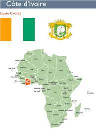

s<!DOCTYPE html>
<html lang="en">
<head>
    <meta charset="UTF-8">
    <meta http-equiv="X-UA-Compatible" content="IE=edge">
    <meta name="viewport" content="width=device-width, initial-scale=1.0">
    <title>mon premier site web</title>
    <link rel="stylesheet" href="style.css">
    <link rel="stylesheet" href="https://cdnjs.cloudflare.com/ajax/libs/font-awesome/4.4.7.0/css/font-awesome.css">
</head>
<body>
    <header>
        <nav>
        <ul>
            <li id="logo"><a href="#">Jean luc titi</a></li>
            <li><a href="village.html">profil</a></li>
            <li><a href="formulaire.HTML">Renseignement</a></li>
            <li><a href="#contact">Nous contacter</a></li>
            <li><a href="#A propos">A propos</a></li>
        </ul>
    </nav> 
    <div id="imageprincipale">
        <h1>Jean luc titi</h1>
        <div id="premierTrait"></div>
        <h1>BIENVENUE CHEZ TITI</h1>
    </div>

    </header>
    <section id="presentations">
        <div id="texteIntro">
            <h2> Ici vous trouverez tout sur moi! 
                beaucoup se posent dejà la question qui est JEAN LUC TITI?
            Alors n'hezitez surtout pas a parcourir ce site
<H4>
            <fieldset>
je suis JEAN LUC TITI Etudiant en informatique developpeur d'application, je suis agé de 23 ans ayant pour situation matrimoniale CELIBATAIRE egalement sans enfant!

pour tout savoir sur moi veuillez vous rendre sur ma plateforme pour toutes vos preocupations necessaires.

jean luc est né le 01 janvier 1998 a KAOKOSSABLY dans la sous/prefecture de FACOBLY jeune etudiant en quètte d'emploi.

dans la vie il ne faut jamais baisser les bras quelque soit les problemes que tu vas traverser, soyons toujours patient car Dieu a un plan pour tout un chacun de nous sur cette terre donc c'est a lui la gloire et toute notre benediction.

Aimons-nous les uns aux autres car c'est dans l'amour que nous pouvons avancer
JEAN LUC TITI né dans les annèes 1998 a kaokossably dans la sous-prefecture de FACOBLY precisement a l'ouest de la cote d'ivoire, il a commencé ses etudes primaires en 2004 à l'EPP KAOKOSSABLY l'annèes historiques ou il commença sa classe de CP1. par la suite il obtient son CEPE en 2011 et orienter au LYCEE MODERNE FACOBLY ou il obtient en 2015 son BREVET D'ETUDE DU PREMIER CYCLE (BEPC). orienter au LYCEE MODETRNE MAN en classe de 2ndC en 2016 il obtient par la suite un BACCALAUREAT D en 2019 dans le dit lycee et fut orienté dans une grande école à ABIDJAN ( la capitale economique de la cote d'ivoire) en IDA (INFORMATIQUE DEVELOPPEUR D'APPLICATION)

merci a tous ceux qui me soutiennent toujours! LA VIE C'EST LES GIGAS..........

Merci a ma digne mére maman MIREILLE MONDOUE je te serai toujours reconnaissant maman et sache aussi que je t'aime

CONTACTS: 0 778 951 425 / 0 595 429 374 / 0 151 456 554 </fieldset>
</h4>

            </h2>
<p>LE BIENFAIT N'EST JAMAIS PERDU!</p>
        </div>
        <div id="presentations">
            <div class="imageprestations">
                <h4>nous trouver</div>
                    <a href="#">
                    </div>
                <div class="imageprestations">
                    <h4>Nos prestations</h4>
                    <a href="#"></a>
                </div>
                <div class="imageprestations">
                    <h4>localisation</h4>
                    <a href="#"></a>
                </div>
        </div>

</section>
<section id="tourisme">
    <h2>Tout savoir</h2>
    <ul>
    <li id="ocean"><p>fonction</p></li>
    <li id="chateau"><p>specialités</p></li>
    <li id="phare"><p>pays</p></li>
    <li id="vignoble"><p>centres d'interet</p></li>
    </ul>
</section>
<footer>
<h2 id=contact>contactez-nous</h2>
<form>
    <input placeholder="Nom">
    <input placeholder="E-mail">
    <textarea placeholder="Votre message Ici..."></textarea>
    <button>Envoyer</button>
</form>
<div id="deuxiemeTrait"></div>
<div id="copyrigghtetIcons">
    <div id="copyright">
        <span>© formScratch(); 2021</span>
    </div>
    <div id="icons">
        <a href="http://www.facebook.com"><i class="fa
            fa-facebook"></i></a>
    </div>
</div>
</footer>
</body>
</html> 